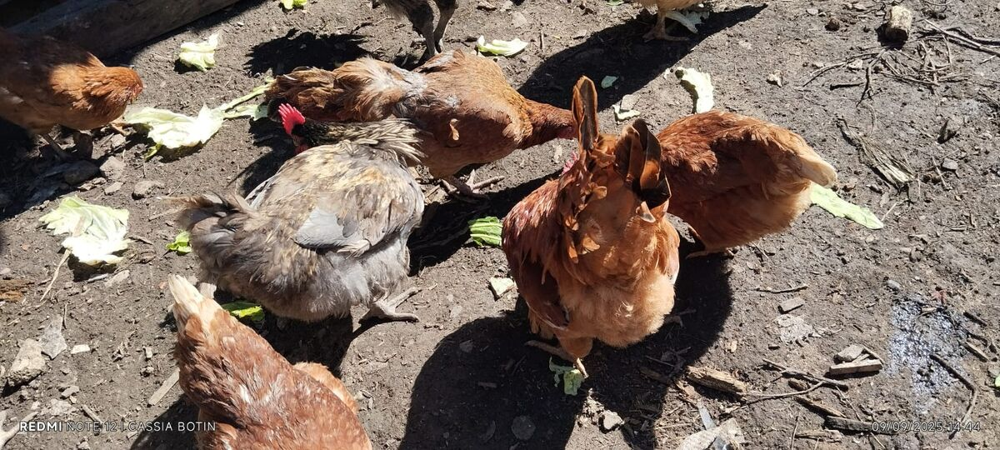
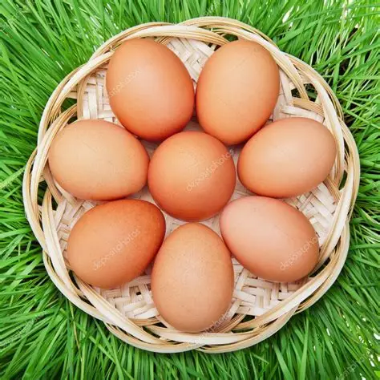
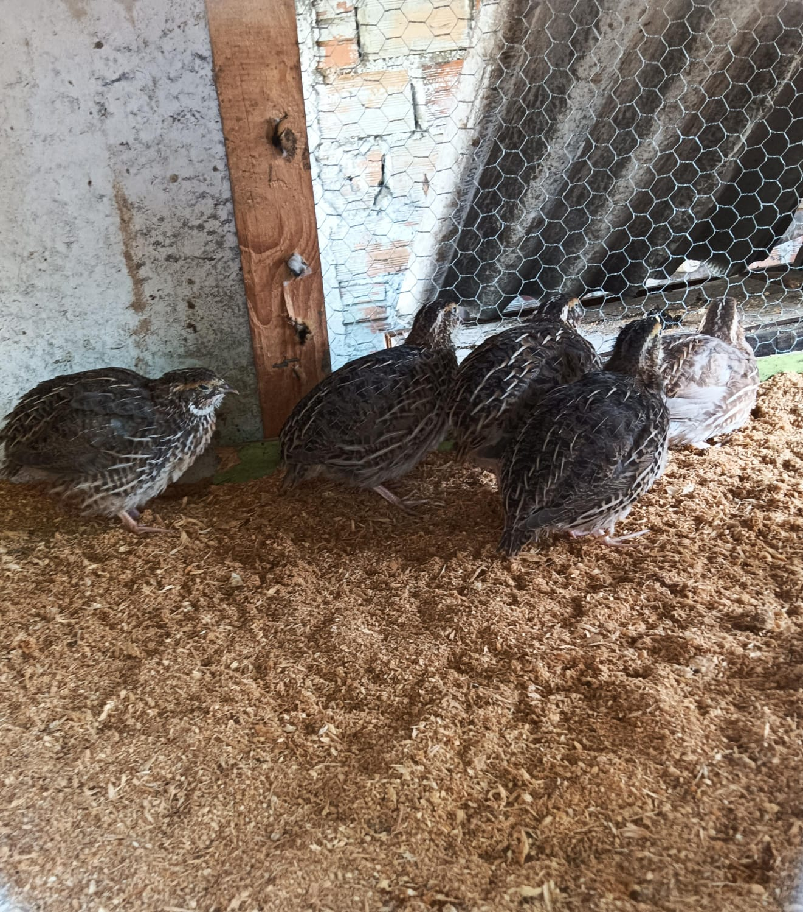

100% Natural da Mata Atlântica
Ovos e Frangos Caipira de Três Barras
Criação sustentável e natural em Santa Catarina. Produtos frescos, saudáveis e com o sabor autêntico do campo.

Nossa História em Três Barras
Localizado no coração da Mata Atlântica de Santa Catarina, nosso criatório combina tradição familiar com práticas sustentáveis modernas.
Sustentabilidade na Mata Atlântica
Em Três Barras, município com 100% de cobertura da Mata Atlântica, desenvolvemos um sistema de criação que respeita o meio ambiente e promove o bem-estar animal. Nossas galinhas vivem livres, alimentando-se naturalmente e contribuindo para a preservação do ecossistema local.
Tradição Familiar
Qualidade garantida
100% Sustentável
Práticas ecológicas

Bem-estar Animal
Criação livre e natural, respeitando o comportamento natural das aves.
Sustentabilidade
Práticas ecológicas que preservam a Mata Atlântica local.
Qualidade
Produtos frescos e nutritivos, direto do produtor para sua mesa.
Nossos Produtos
Produtos frescos e naturais, direto do nosso criatório em Três Barras para sua mesa.

Ovos
Ovos Caipira - Dúzia
Ovos frescos de galinhas criadas livres na Mata Atlântica
R$ 12,90
 Frangos
Frangos
Frango Caipira Inteiro
Frango caipira criado livre, aproximadamente 2kg
R$ 28,90
 Pintinhos
Pintinhos
Pintinhos Caipira
Pintinhos de 1 dia, raça caipira selecionada
R$ 8,50

Codornas
Codornas Adultas
Codornas para postura, criadas naturalmente
R$ 15,00
 Reprodutores
Reprodutores
Galo Reprodutor
Galo caipira para reprodução, linhagem selecionada
R$ 45,00
 Reprodutores
Reprodutores
Galo Garnizé
Galo garnizé para reprodução, raça tradicional
R$ 50,00
Treinamentos e Workshops
Capacitação para produtores rurais interessados em criação sustentável.
Criação de Galinhas Caipiras para Iniciantes
Duração: 8 horas
Formato: Presencial
Público: Iniciantes
Aprenda os fundamentos da criação de galinhas caipiras, desde a escolha das aves até o manejo diário.
Boas Práticas de Manejo
Duração: 6 horas
Formato: Online
Público: Intermediário
Técnicas avançadas de manejo para otimizar a produção e garantir o bem-estar animal.
Produção de Ovos Orgânicos
Duração: 12 horas
Formato: Presencial
Público: Avançado
Certificação e técnicas para produção de ovos orgânicos seguindo normas ambientais.
Perguntas Frequentes
Encontre respostas para suas dúvidas sobre nossos produtos e serviços.
Entre em Contato
Estamos prontos para atendê-lo. Fale conosco!
Envie sua Mensagem
Informações de Contato
Endereço
Três Barras, São Cristovão
Santa Catarina
Telefone
Horário de Atendimento
Segunda a Sexta: 8h às 18h
Sábado: 8h às 12h